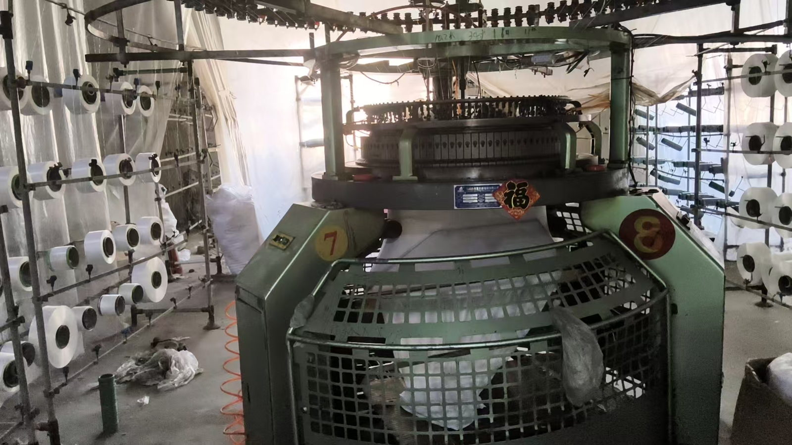

关于利晨
专注针织面料织造与定制服务
以客户需求为导向，围绕面料类型、成分、克重、颜色与规格开展沟通和定制。
工厂简介
自有生产车间，灵活承接定制需求
即墨区利晨针织厂位于山东省青岛市即墨区通济街道办事处张家西城东村工业园。工厂拥有自有生产车间和针织设备，在各类针织面料织造方面具备经验，主要提供针织面料定制与加工服务。
可根据客户样品、图片及实际用途沟通面料方案。打样要求、起订量和交货周期均根据产品规格、订单数量与生产排期确认。
查看定制服务 →
织造过程实拍（由工厂拍摄提供）
生产现场
设备与车间，真实可见
以上照片与视频均由工厂实地拍摄，展示自有生产车间与针织设备的实际运行情况。设备数量、产能等信息暂未在网站上公布，如需了解请直接联系沟通。
- 自有生产车间，设备自主安排
- 针织大圆机现场织造
- 欢迎联系确认具体工艺与排期
设备信息
工厂提供的针织机型
仅展示已提供的机型，不虚构设备数量、产能或未确认的技术参数。
双面机
单面机
毛巾机
合作特点
围绕订单需求灵活沟通
来样 / 来图定制
支持以客户提供的样品或图片作为沟通依据。
成分与克重定制
根据面料用途沟通成分、克重、颜色和规格。
灵活订单安排
小批量与大批量需求均可联系沟通，具体条件以确认结果为准。
关于本网站的信息口径
网站上不展示固定价格、起订量、交期、产能、设备数量、成立时间与客户案例等信息，因为这些内容需以实际沟通确认为准。已公开的内容来自工厂提供并确认的资料。
告诉我们您的面料需求
准备好产品类别、预计数量、成分/克重/规格与颜色要求后，可通过电话或微信直接联系工厂。
电话 / 微信：13210025853